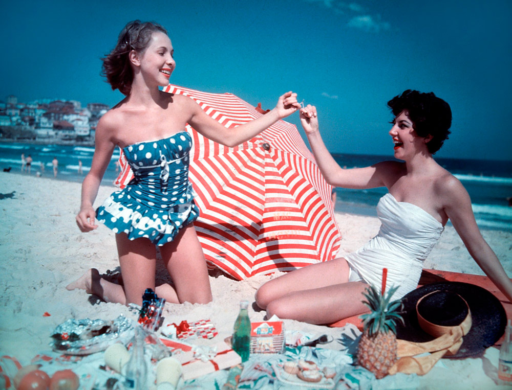

1952 Miss Pacific finalists Mary Clifton, Pamela Jansen and Judy Worrad, stand in front of surfboards on Bondi Beach. In 2007 1,010 models gathered on Bondi Beach to set a Guinness World Record for the largest swimsuit shoot.
The hottest day on the beach happened in January 2018 when a scorching 47.3 degrees Celsius was recorded. Thats beats the previous record from 2013 of 45.8 degree Celsius. The summers at Bondi Beach are generally fine.
Visiting Bondi Beach at certain times of the year gives you more than just the waves to enjoy. There are a huge variety of events held there, one of the most famous is the City to Surf run held annually.
Bondi Beach is a favourite location for films, music videos, television series, and even video games. As a matter of fact, at least 15 major productions chose the beach to be their official setting. 